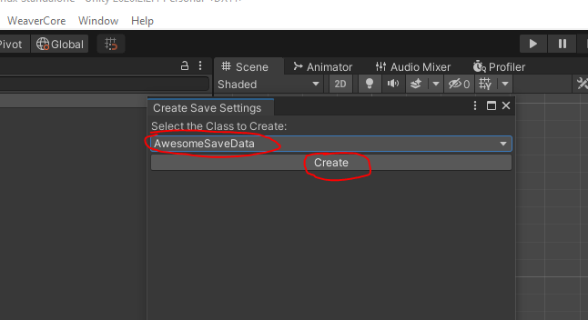
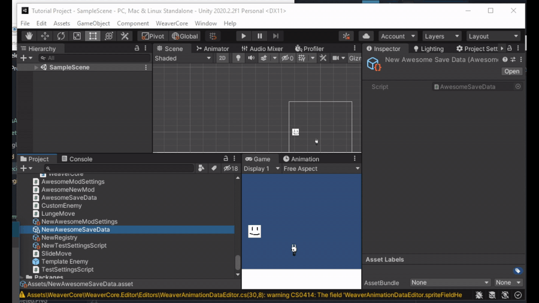

Mod Save Specific Settings
This tutorial will go over how to create save data this is different per save file.
First, create a new script file in the "Assets" folder, with a class that inherits from WeaverCore.Settings.SaveSpecificSettings.
//AwesomeSaveData.cs
using System;
using System.Collections.Generic;
using System.Linq;
using System.Text;
using System.Threading.Tasks;
using WeaverCore.Settings;
public class AwesomeSaveData : SaveSpecificSettings
{
}
With the script created, go to "WeaverCore -> Create -> Save Specific Settings", select the name of your class, and click on Create:

This will create an instance of the class we made:

Be sure to add it to the registry so it's enabled in-game:

Configuring It
With our Save Data object now created, we can start adding some fields to it that will have their data stored to the save file:
using System;
using System.Collections.Generic;
using System.Linq;
using System.Text;
using System.Threading.Tasks;
using UnityEngine;
using WeaverCore.Settings;
public class AwesomeSaveData : SaveSpecificSettings
{
//Public fields will have their data stored to a save file
public bool bossDefeated;
//Having the [SerializeField] attribute attached also works
[SerializeField]
float testFloat;
protected override void OnSaveLoaded(int saveFileNumber)
{
//Called after a new save file has been loaded, and the data has been loaded from the save file
}
protected override void OnSaveUnloaded(int saveFileNumber)
{
//Called right before the current data gets saved to a save file
}
}
Any fields that are marked as public, or have the [SerializeField] attribute attached, will have their data save to a save file.
If we head back to the Unity Editor, you will see some fields on the SaveSpecificSettings object we created:

Whatever values we configure here will be the default values when the player loads up a save file for the first time.
How to access the settings in-game
There are two ways you can retreive the save settings of a mod in-game. The first is to use the Registry related functions to get an instance of the save specific settings object:
var settings = Registry.GetFeature<AwesomeModSettings>();
Debug.Log("Boss Defeated = " + settings.bossDefeated);
The other way is to use SaveSpecificSettings.GetSaveSettings
var settings = GlobalSettings.GetSettings<AwesomeModSettings>();
Debug.Log("Boss Defeated = " + settings.bossDefeated);
Using either of these methods allows you to access the save data for a mod